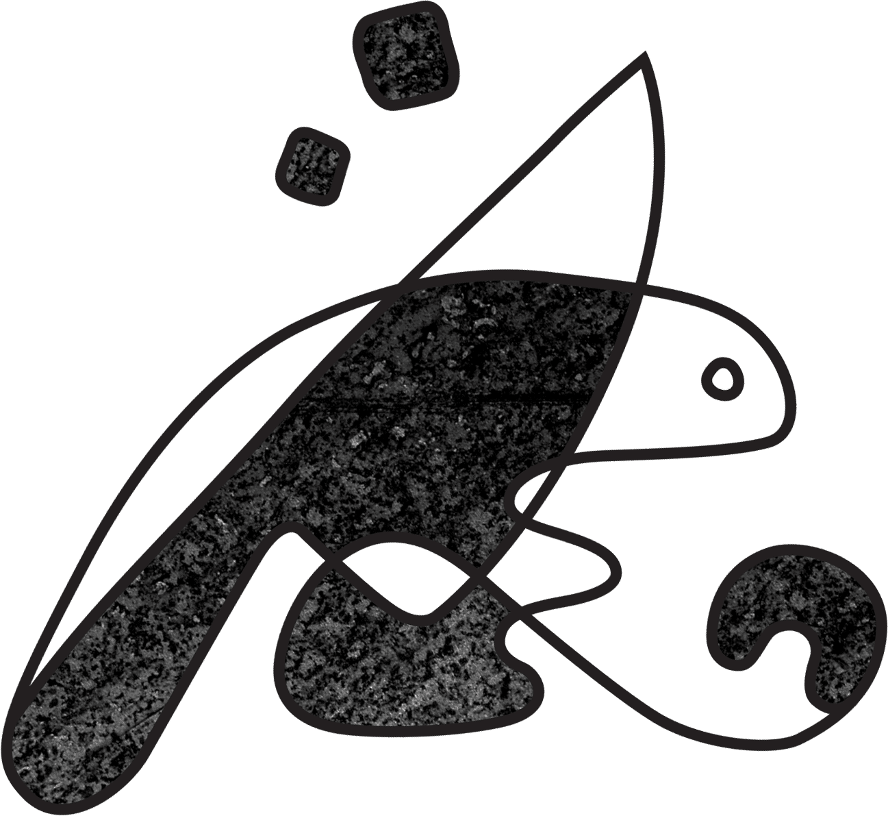
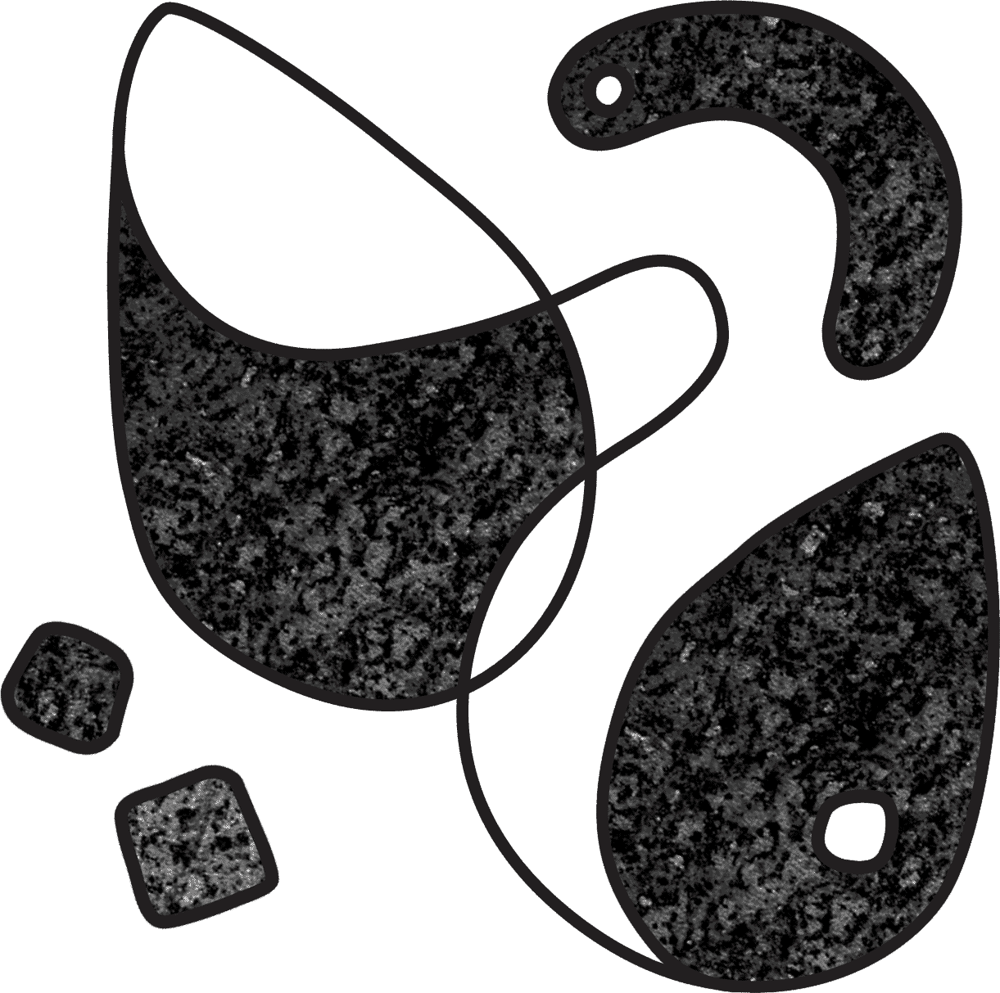
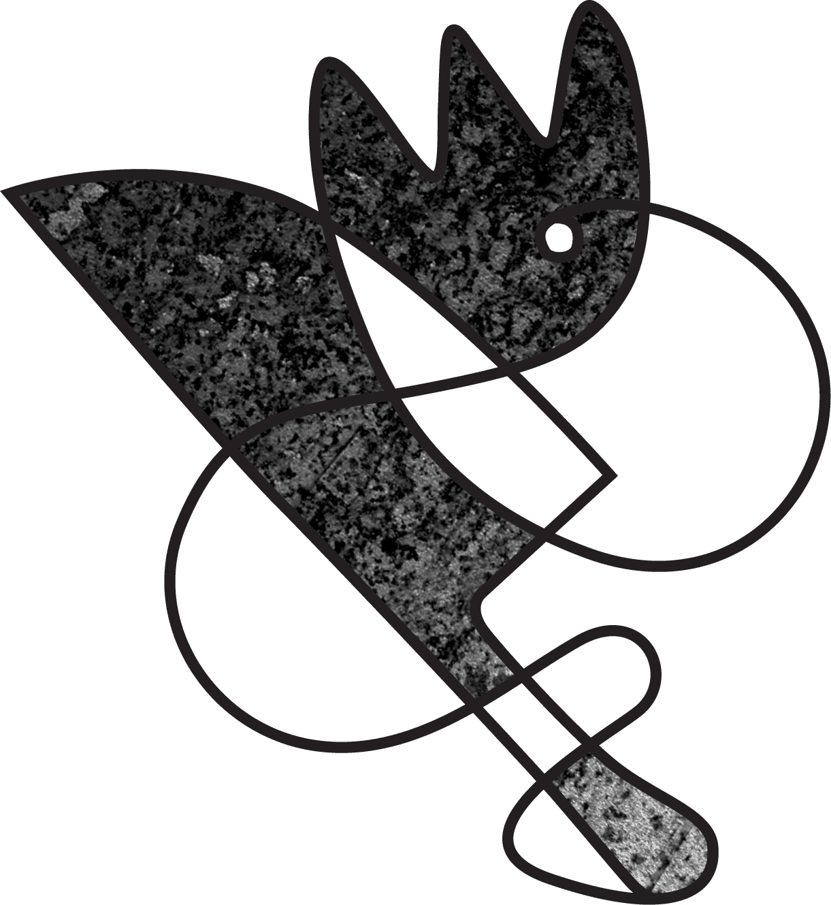
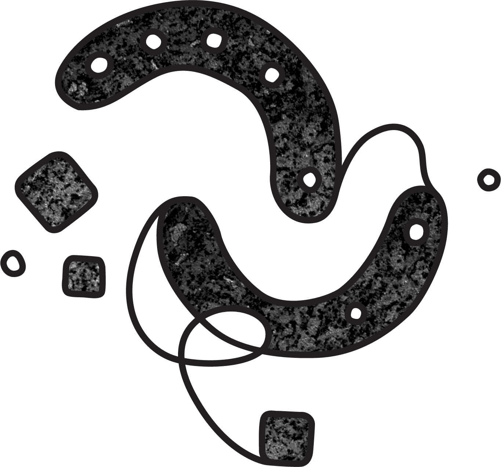
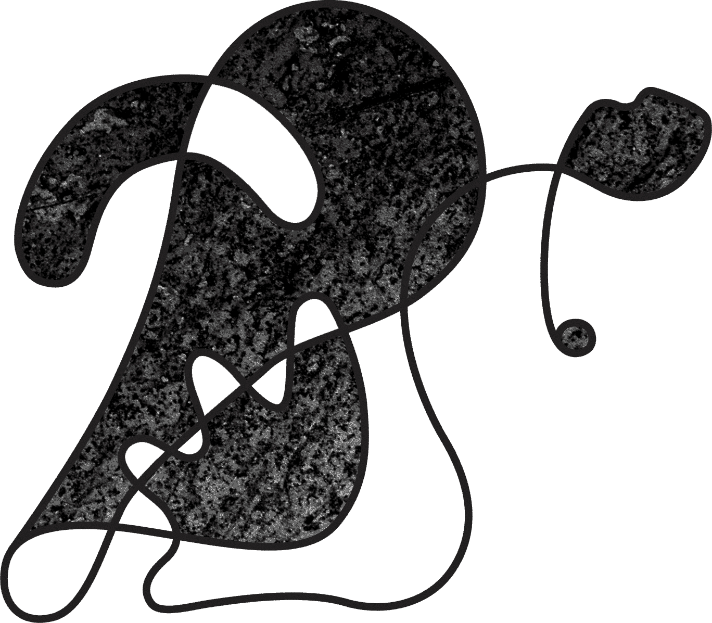
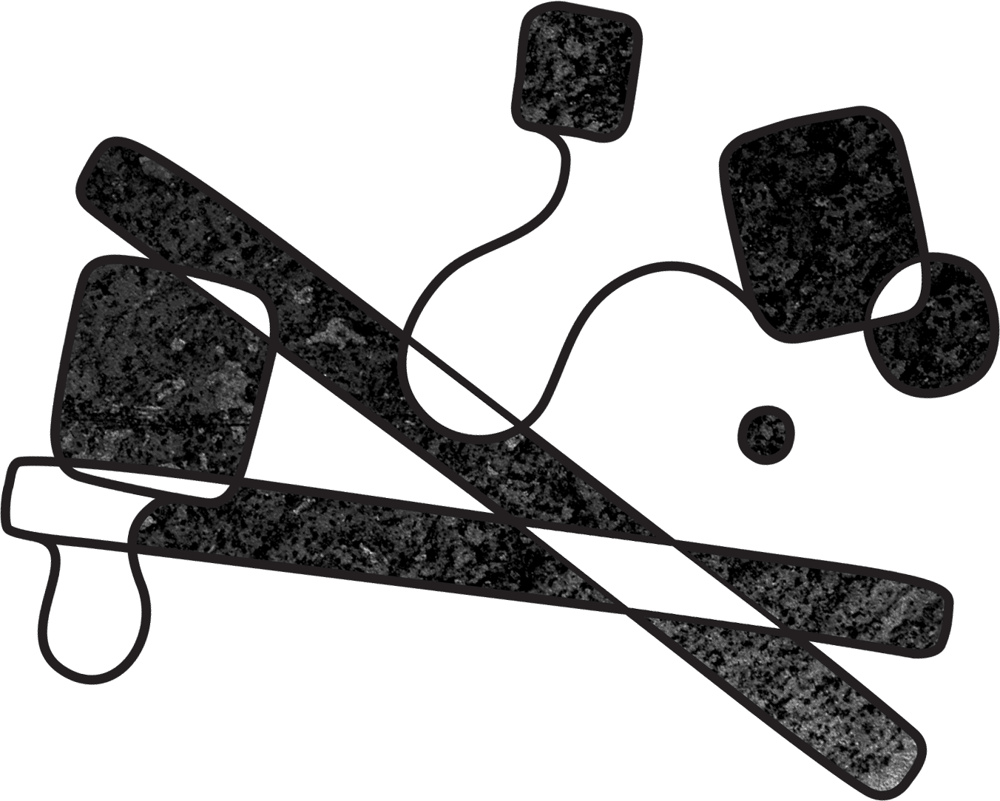

A recent encounter with a six-bladed chopping tool that would have been used for food preparation in a Victorian kitchen got me thinking about cutting tools and the human need to render our food into small enough pieces to handle and manoeuvre. Sure, nature provides some foods in handy bite-sized pieces (berries, nuts, eggs) but for most foodstuffs (say, the carcass of a deer) it is necessary to chop them down to cookable, serveable size. And that means cutting tools.
The history of human development is also the history of cutting tools; from the first stone hand-axes crafted with care by our earliest ancestors (for instance the beautiful example found in 120 million year old deposits in Olduvai Gorge, Tanzania) through the discovery of iron, steel, the mechanization of the industrial revolution and to today. These technical innovations go hand-in-hand with changes in cultural conventions of cutting and eating food – in the Western world, the fork was thought a ridiculous and overly-fastidious way of carrying food to the mouth until surprisingly recently. Forks were regarded with suspicion right into the middle of the eighteenth century, it being more polite before this point to simply use the hands, a knife and a spoon to transport food to mouth. This shift in table manners coincided with the spread of the blunt table knife, before which each diner had used their own personal all-purpose knife, sharp and versatile enough to peel apples, cut meat and spear cheese.
So much for the development of our modern way of eating. But what of the mouths into which these knives and forks were carrying food, and the teeth that chewed it? We are used to considering a ‘normal’ alignment of teeth one in which the front row of the top teeth slightly overhangs those of the bottom row – a gentle overbite that means that the incisors protrude a little from the line. But careful investigation of the teeth of skeletons shows that this has only been ‘normal’ in the Western world for the last 250 years or so. Before this point, most human beings had an edge-to-edge bite where the teeth meet in a straight line, similar to that of apes or the surviving Neanderthal skeletons that have been unearthed. What changed, and why?
This was a question that interested American anthropologist Professor Charles Loring Brace (1930–), who in the 1960s set out to settle the question of how the overbite had emerged. Over many years of analysis of the jaw alignment in skeletons, Brace arrived at a startling conclusion: it was the use of the knife and fork to cut food into bite-sized pieces that had caused this change. It was no longer the custom to wrench meat and other foods from a larger chunk held in the hands, and the bluntening of knives had made it necessary to have softer foods, resulting in even less chewing. This had immediate impact on the development of the teeth, and explained why the overbite emerged first in what Brace called ‘high-status individuals’.
But what of cultures that do not use a knife and fork? In China it has been the cultural norm to use chopsticks to eat small pieces of food that have already been chopped down to size in the kitchen. Many years later, on a research quest to Shanghai, Brace came across the preserved remains of a scholar who had lived and died in the Song dynasty (AD 960–1279), by which time chopstick use had become widespread in China. And there he found it: ‘the deep overbite of the modern Chinese’. Further investigation revealed that, apart from among the peasant classes, the overbite had become normal in China around 800-1,000 years before Europe.
And so, without our noticing, the ways in which we cut and eat have had an impact on much more than table manners. We like to think, as human beings, that we shape our tools, and that’s what makes us different, but maybe the real difference is much more about how our tools shape us.